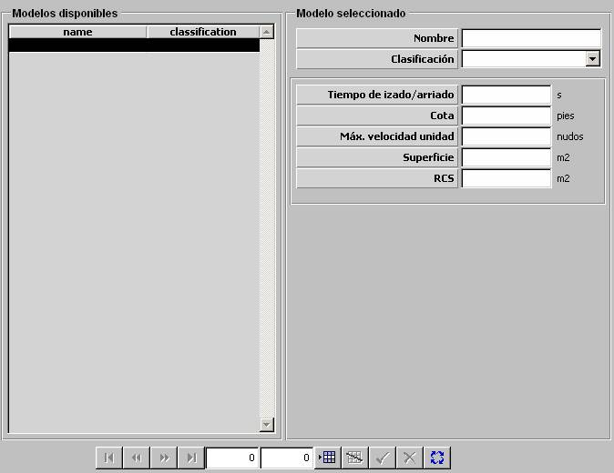

Mástiles de Submarinos

Los siguientes parámetros caracterizan los mástiles incorporados por plataformas submarinos. Son tenidos en cuenta por los modelos de sensores y comunicaciones, de forma que sólo podrán ser activados si el mástil asociado se encuentra izado (ver Plataformas - Submarinos y Configuración de Mástiles en Preparación de Unidades). Además, los mástiles de un submarino sumergido podrán ser detectados por sensores optrónicos y / o radar cuando se encuentren izados.
Tiempo de Izado / Arriado: Tiempo requerido para izar o arriar el mástil.
Unidades: segundos
Rango: 0 – 999
Cota: Profundidad máxima a la que puede navegar la plataforma con el mástil izado. Cuando la plataforma se mantiene en este rango de profundidad con el mástil izado se considera que éste sale a superficie.
Unidades: pies
Rango: 0 – 99
Máxima Velocidad de la Unidad: Este parámetro es tenido en cuenta por el modelo de dinámica como límite de velocidad para la plataforma cuando se encuentra con el mástil izado.
Unidades: nudos
Rango: 0 – 100
Superficie: Este parámetro es tenido en cuenta por el modelo de visual para calcular la distancia a la que el mástil es detectado cuando se encuentra izado.
Unidades: m2
Rango: 0 – 100
RCS: Este parámetro es tenido en cuenta el modelo de radar para calcular la distancia a la que el mástil es detectado cuando se encuentra izado.
Unidades: m2
Rango: 0 – 999